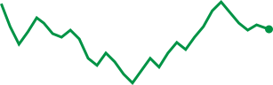
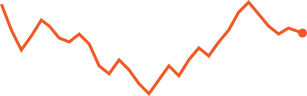
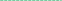
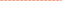

€116.85 margin
0.10 lots





214.348 214.342 214.336 214.327How far price may move before your order fills. Too tight and it is rejected, too wide and it fills worse.
A note to yourself. Shows up with the position in your history.
Everything is selected. Tap a position to keep it open.